A shop that behaves like a private view.
Most luxury shopping on a phone still feels like a website squeezed into a screen. Aura Archive treats the phone as a house instead: a door, a room, a season, and a person who knows your size.
- Role
- Sole designer — UX & UI
- Scope
- 30 screens · five flows
- Timeline
- 2–4 weeks
- Status
- Self-initiated concept
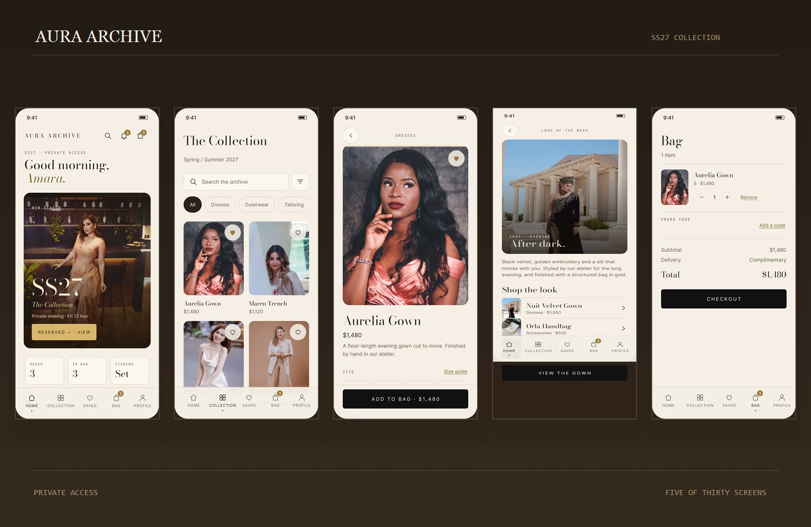
01 — The brief I set myself
Design the feeling before the funnel.
This was a self-initiated concept. There was no client, no existing brand and no analytics to react to. The brief was a question: what would a fashion house build if it started on the phone rather than adapting a shop?
The answer I designed toward was a sequence of small, deliberate moments: being let in, being asked what you love, seeing one piece properly, and being able to ask a person about it. Commerce sits inside that sequence rather than interrupting it.
Scope was the discipline. One season, nine pieces, five flows, thirty screens. A tight catalogue makes the editorial and service layers visible; a hundred products would have turned the concept back into a grid.
02 — The door
Let people in, then ask one useful question.
Sign-in is a cover, not a gate. Apple, Google, email and “Browse as guest” sit on the same screen, and the guest route is given equal weight. The tone is “portal access”, not “create an account to continue”.
Onboarding asks two things: which categories you wear and your usual size. Both can be skipped. The home uses the answers to lead with the right pieces, but the full collection stays open — personalisation is a shortcut, not a lock.
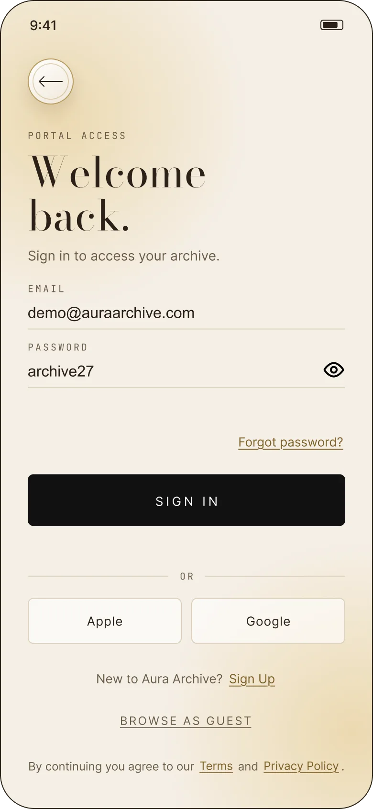
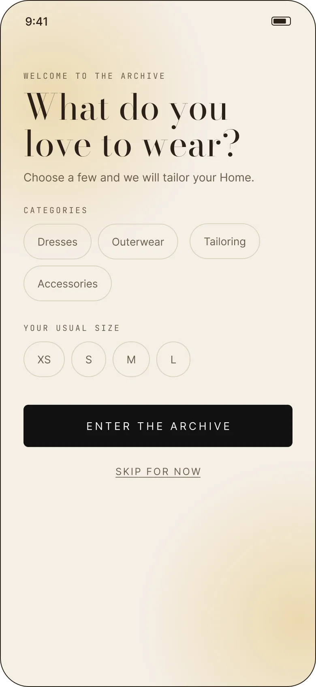
03 — The architecture
Five tabs, one record.
Home, Collection, Saved, Bag, Profile. The five tabs never change, and the bag count carries across the browsing screens. A saved piece and a purchased piece are the same object at different states, not separate catalogue entries.
The service layer lives in Profile: orders, private viewings, saved pieces, addresses, payment methods, notifications, region, help and the legal pages. Putting it there keeps the shopping tabs clean without hiding the relationship after checkout.
- 01The pieceOne product record travels from home to collection, saved, bag and order — same photograph, same price, same copy.
- 02The bagA persistent object with quantity, promo, subtotal and delivery. It is never rebuilt from scratch between screens.
- 03The appointmentA reservation with a boutique, date, time, guest and a note for the stylist — editable and cancellable in place.
04 — The room
A home that changes with the season.
The home is built as an issue rather than a dashboard: a cover, a greeting, the SS27 feature, then New in, Look of the week, Shop by category and The edits. The three counters — saved, in bag, viewing — sit near the top, so the commerce never disappears while you are being editorial.
The collection is the opposite: a flat, filterable grid, a search field and four categories. It is the one screen in the app designed to be scanned rather than read, and it is where the season becomes a catalogue.
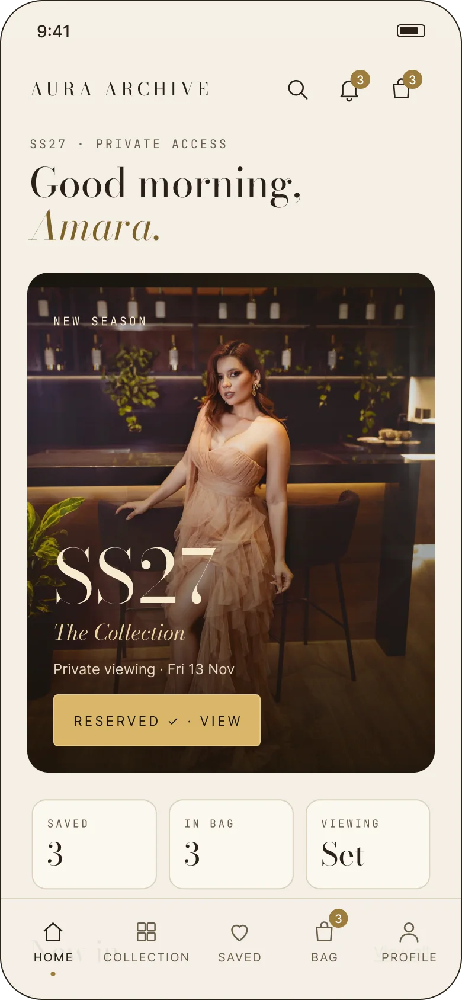

05 — The piece
One photograph, then everything you need to decide.
The product page gives the image most of the screen, then the price, the copy and the size row. Size guide sits beside the size selector; details, care, delivery and returns are accordions beneath. “You may also like” is a horizontal rail, not a wall.
The sample piece is the Aurelia Gown — $1,480, a floor-length evening gown cut to move, made in the atelier from certified fabrics with hand-finished seams. The model is 176 cm and wears size S. That specificity is what makes a product page feel like a shop rather than a template.
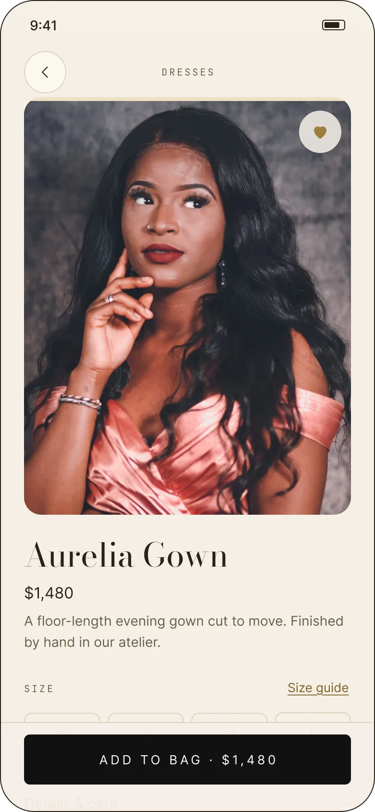
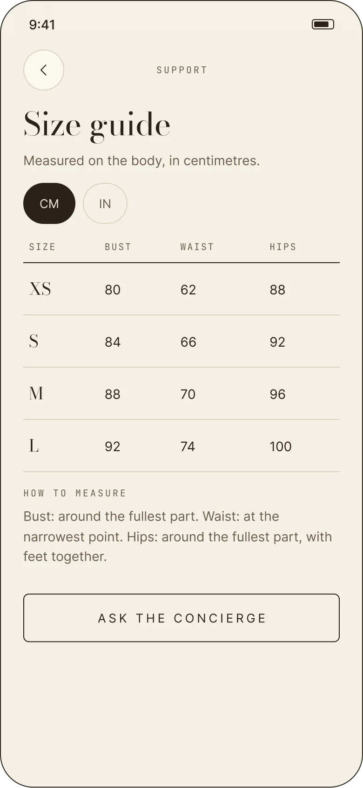
06 — The editorial layer
Sell the look, not just the item.
Look of the week is a full-bleed story: “After dark.” — black velvet, golden embroidery and a slit that moves with you, styled by the atelier and finished with a structured bag in gold. The pieces are shoppable underneath, so the story is also a route into the catalogue.
The edits — The Evening Edit, Resort Tailoring, Gold Hour — give the same nine pieces a second entrance. Curating by mood rather than category is closer to how people actually shop for an occasion, and it lets one product appear in several contexts without duplicating it.

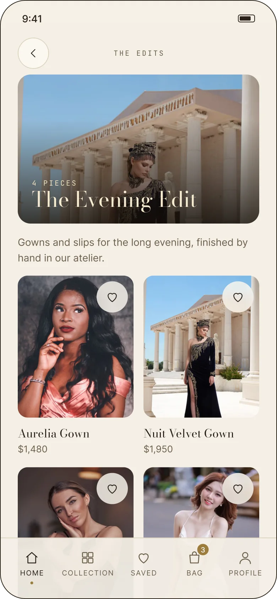
07 — The transaction
Three steps, and a record you can find later.
The bag is a single object that persists across the app. Checkout is split into Delivery, Payment and Review, with the same summary at every step and a final button that states the total. Standard delivery is complimentary, express is $35, and boutique collection is free in Lagos.
The confirmation gives an order number and says a confirmation is on its way by email. The order screen turns delivery into four visible states — placed, packed in atelier, on its way, delivered — and keeps the address and card used in the same record.
One bag, three addresses
Home, studio or a new address; standard, express or boutique collection.
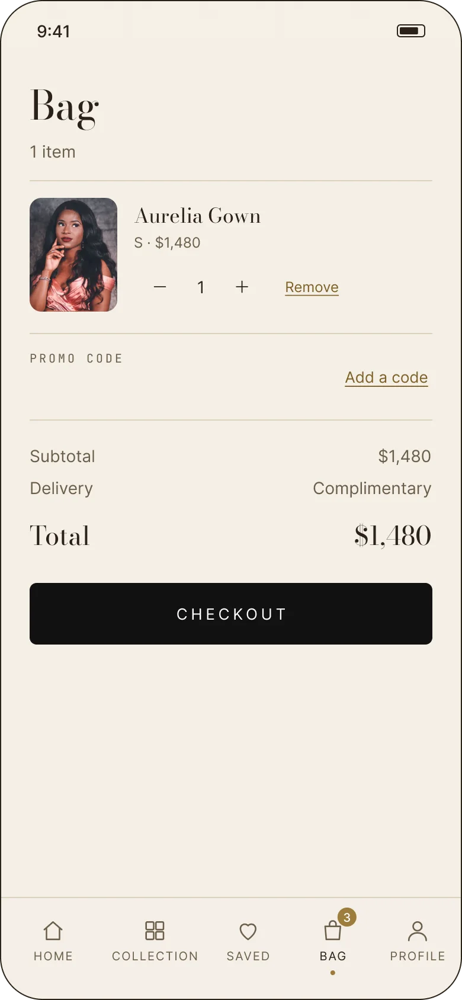
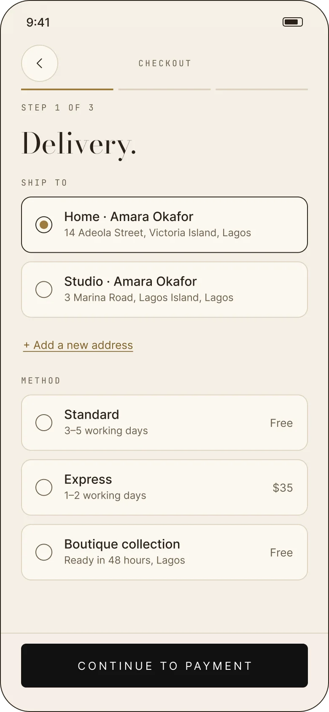
Card or Apple Pay
A saved card, Apple Pay, or a new card that is clearly marked demo-only.
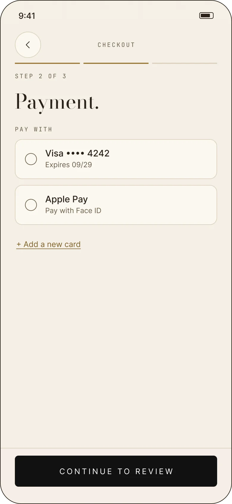
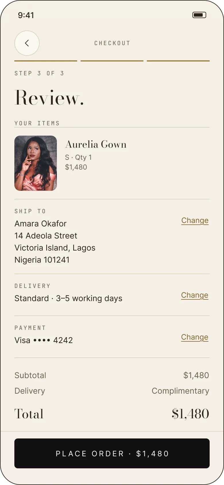
A record, not a thank-you
An order number, a confirmation by email, then four delivery states in the order.
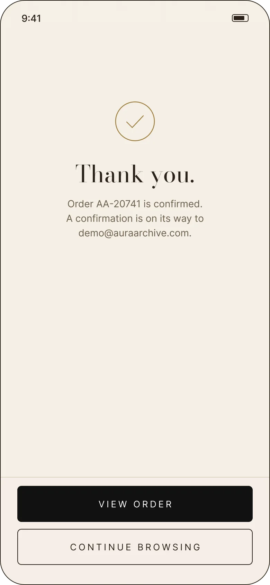

08 — The appointment
The part that makes it a house.
Private viewing is the concept’s answer to the luxury store. A customer chooses a boutique — Lagos, London, Paris or Milan — a date, a time and a guest, and writes a note for the stylist. The confirmation says “You are on the list”, not “booking confirmed”.
The reservation can be rescheduled without losing the note or guest preferences, and cancelled with a clear consequence: “Your place will be released for another guest.” The concierge sits beside it — a real thread with order tracking, viewings and sizing help.
Choose a room
Four boutiques, four dates, four times, one guest — and a note for the stylist.

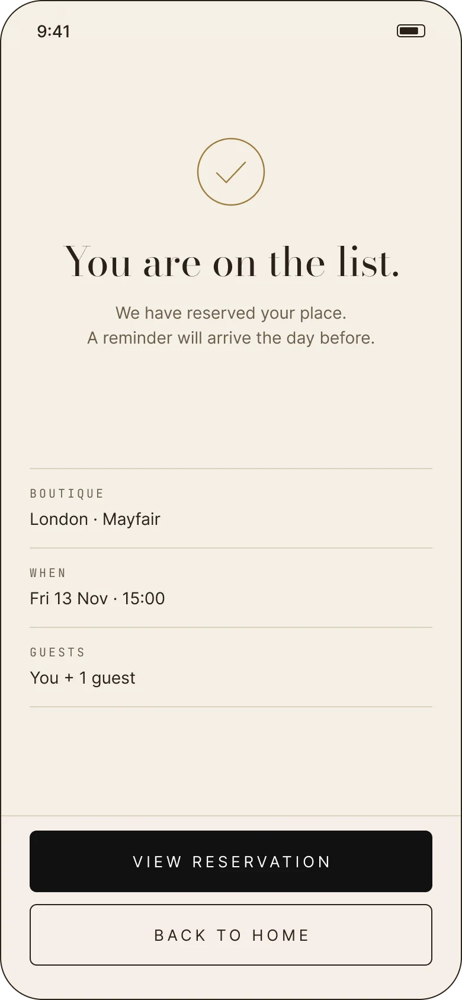
Keep the note
A new time keeps the appointment’s preferences; cancelling releases the place explicitly.
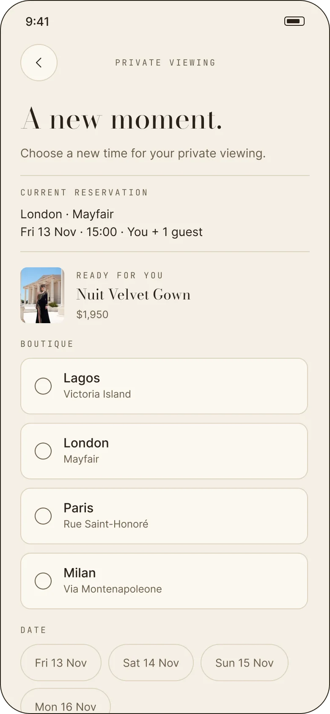
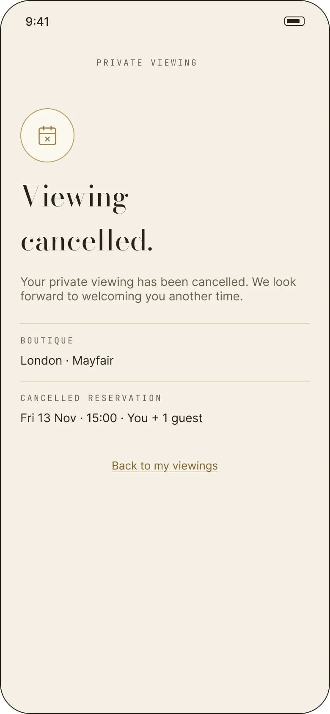
A person, in the app
The concierge handles sizing, orders and viewings without leaving the archive.
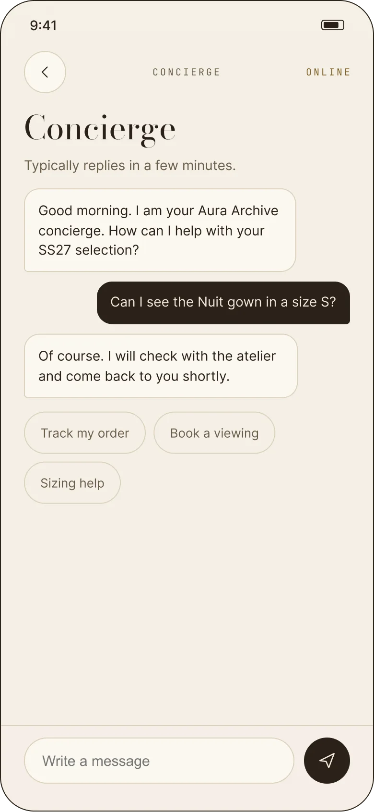

“An hour with a stylist, tea, and the full SS27 collection.”Aura Archive — private viewing screen
09 — The system
A palette that behaves like material.
Cocoa (#2A2118) for type, taupe (#6B5E4A) for secondary copy, cream (#FBF7EF) for surfaces and gold (#9C7C3C) for the season. Gold is used sparingly — a rule, a price, a confirmation — so it stays feeling like foil rather than a theme colour.
Bodoni Moda gives the headings their fashion voice, Inter keeps the reading quiet, and JetBrains Mono handles labels, totals and order numbers. Radii move between 6, 12, 22 and 999 depending on whether the object is a field, a card, a sheet or a pill.
After dark.
A floor-length evening gown cut to move. Finished by hand in our atelier.
SS27 · PRIVATE ACCESS · 3–5 WORKING DAYS
Field · Card · Sheet · Pill
10 — What I’d test next
The honest open questions.
This is a concept, so there is no usage data and no formal user testing behind it. These are the questions I would want to answer before calling any of it finished:
- 01Does taste onboarding earn its friction?Does a two-question start actually change what people open, or would a strong editorial home do the same job without asking?
- 02Does guest access help or delay commitment?Where is the right moment to ask someone to sign in — at the door, at saved, or at checkout?
- 03Is the private viewing legible as commerce?Do people understand they can reserve a piece for the appointment, or does it read as a purely editorial invitation?
- 04Does the concierge scale?A thread that replies in minutes is believable in a prototype; the design needs a real service model behind it.
- 05Is the catalogue too small?Nine pieces makes the editorial strong; it may make the collection feel thin to someone shopping for choice.
The archive is clickable.
Thirty screens, five flows, one prototype. Start at the cover, or jump straight into the collection.